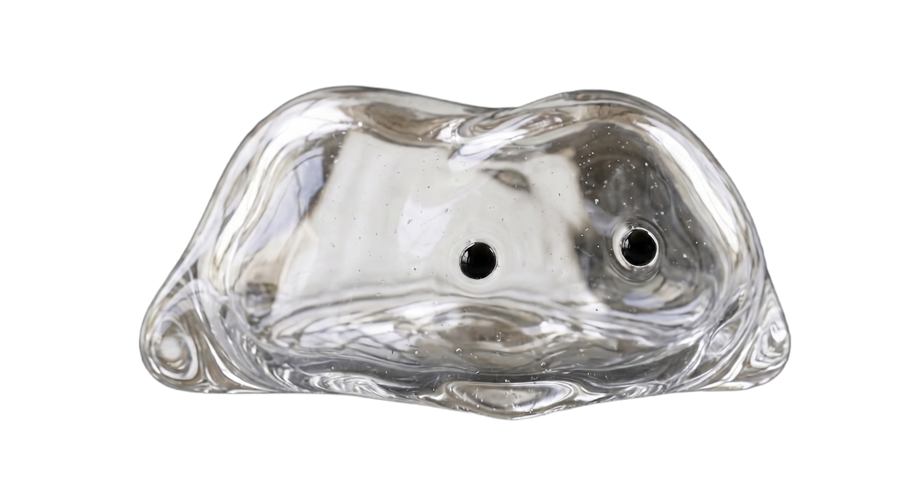

Last updated · May 2026
By downloading, installing, or using MyLoo ("the App"), you agree to these Terms of Service. If you do not agree, do not use the App.
MyLoo is a personal digestive-health tracker. The App lets you log entries on the Bristol Stool Scale (manually or via AI photo classification), see trends, receive personalised tips, and export reports for clinicians. MyLoo is a tracking and educational tool, not a medical device, and does not provide medical advice, diagnosis, or treatment.
You must create an account to use the App. You can sign up with email + password or with Sign in with Apple. You are responsible for keeping your credentials confidential and for all activity under your account.
Subscription prices are shown in the App at the moment of purchase, in your local currency, sourced from the App Store. Subscriptions are billed through your Apple ID. They auto-renew at the end of each period unless cancelled at least 24 hours before the renewal date. You can manage or cancel your subscription any time in Apple ID → Subscriptions.
If a free trial is offered, the trial duration and the price charged after the trial are shown on the paywall before you confirm purchase. If you do not cancel before the trial ends, the subscription begins automatically at the displayed price.
You can cancel any time in Apple ID → Subscriptions. After cancellation, you keep premium access until the end of the current billing period. Refunds are handled by Apple under their refund policy — request via reportaproblem.apple.com.
You retain full ownership of all content you create in the App (entries, photos, notes). You grant us a limited license to store and process this content solely to provide the App's services to you. We do not claim ownership of your content and never use it for any other purpose.
You agree not to:
MyLoo provides general information about gut health based on the Bristol Stool Scale and published frameworks (NICE, Rome IV, Monash low-FODMAP). It does not provide diagnosis, treatment, prescription, or medical advice. Always consult a qualified healthcare professional for medical concerns. Do not delay or disregard medical care because of information from this App.
All trademarks, logos, designs, code, and content of the App are owned by MyLoo or its licensors. You receive a limited, non-transferable, revocable license to use the App for personal, non-commercial purposes.
You may terminate by deleting your account in the App (Settings → Account → Delete account). We may suspend or terminate access in case of breach of these Terms or fraudulent activity. On termination, your data is removed within 30 days as described in the Privacy Policy.
To the maximum extent permitted by law, MyLoo and its operators are not liable for indirect, incidental, special, or consequential damages arising from use of the App. The App is provided "as is" without warranty of any kind.
These Terms are governed by Swiss law. Place of jurisdiction for disputes is the operator's seat, subject to mandatory consumer-protection rules of your country of residence.
We may update these Terms. Significant changes will be communicated via in-app notification or email. Continued use after changes constitutes acceptance.
Questions about these Terms: support@myloo.app
Mit dem Download, der Installation oder der Nutzung von MyLoo („die App") erklärst du dein Einverständnis mit diesen Nutzungsbedingungen. Bist du nicht einverstanden, nutze die App nicht.
MyLoo ist ein persönlicher Verdauungs-Tracker. Du kannst Einträge auf der Bristol-Stuhl-Skala loggen (manuell oder via KI-Foto-Klassifikation), Trends sehen, personalisierte Tipps erhalten und Berichte für medizinisches Fachpersonal exportieren. MyLoo ist ein Tracking- und Bildungstool, kein Medizinprodukt, und stellt weder medizinische Beratung noch Diagnose oder Behandlung dar.
Zur Nutzung musst du ein Konto erstellen — per E-Mail + Passwort oder via Sign in with Apple. Du bist verantwortlich für die Vertraulichkeit deiner Anmeldedaten und alle Aktivitäten unter deinem Konto.
Abo-Preise werden in der App vor dem Kauf in deiner Lokalwährung angezeigt, bezogen vom App Store. Die Abrechnung erfolgt über deine Apple-ID. Abos verlängern sich automatisch am Ende jeder Periode, sofern nicht mindestens 24 Stunden vor Verlängerung gekündigt. Du kannst dein Abo jederzeit verwalten oder kündigen unter Apple-ID → Abonnements.
Wird eine kostenlose Probezeit angeboten, werden Dauer und der danach gültige Preis vor dem Bestätigen des Kaufs auf der Paywall angezeigt. Wird nicht vor Ende der Probezeit gekündigt, beginnt das Abo automatisch zum angezeigten Preis.
Du kannst jederzeit unter Apple-ID → Abonnements kündigen. Nach Kündigung behältst du Premium-Zugang bis zum Ende der aktuellen Periode. Rückerstattungen werden von Apple gemäss deren Refund-Policy bearbeitet — Antrag via reportaproblem.apple.com.
Du behältst die volle Eigentümerschaft an allen Inhalten, die du in der App erstellst (Einträge, Fotos, Notizen). Du gewährst uns eine begrenzte Lizenz, diese Inhalte ausschliesslich zur Bereitstellung der App-Dienste zu speichern und zu verarbeiten. Wir beanspruchen keine Eigentumsrechte und nutzen die Inhalte nie für andere Zwecke.
Du verpflichtest dich, nicht:
MyLoo bietet allgemeine Informationen zur Darmgesundheit, basierend auf der Bristol-Stuhl-Skala und veröffentlichten Frameworks (NICE, Rome IV, Monash low-FODMAP). Die App stellt weder Diagnose, Behandlung, Verschreibung noch medizinische Beratung dar. Wende dich bei medizinischen Anliegen immer an qualifiziertes medizinisches Fachpersonal. Verzögere oder ignoriere keine medizinische Versorgung wegen Informationen aus dieser App.
Alle Marken, Logos, Designs, Code und Inhalte der App gehören MyLoo oder ihren Lizenzgebern. Du erhältst eine begrenzte, nicht übertragbare, widerrufbare Lizenz zur Nutzung der App für persönliche, nicht-kommerzielle Zwecke.
Du kannst beenden, indem du dein Konto in der App löschst (Einstellungen → Konto → Konto löschen). Wir können den Zugang aussetzen oder beenden bei Verstoss gegen diese Bedingungen oder betrügerischer Aktivität. Bei Beendigung werden deine Daten innerhalb von 30 Tagen entfernt, wie in der Datenschutzerklärung beschrieben.
Soweit gesetzlich zulässig, haften MyLoo und Betreiber nicht für indirekte, beiläufige, besondere oder Folgeschäden aus der App-Nutzung. Die App wird „wie besehen" ohne jegliche Gewährleistung bereitgestellt.
Diese Bedingungen unterliegen Schweizer Recht. Gerichtsstand für Streitigkeiten ist der Sitz des Betreibers, vorbehaltlich zwingender Verbraucherschutz-Vorschriften deines Wohnsitzlandes.
Wir können diese Bedingungen aktualisieren. Wesentliche Änderungen kommunizieren wir via In-App-Notification oder E-Mail. Weiternutzung nach Änderungen gilt als Annahme.
Fragen zu diesen Bedingungen: support@myloo.app